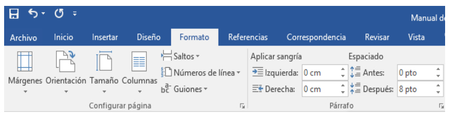

Microsoft Word 2016 es un procesador de textos, el cual permite elaborar diversos tipos de documentos como: Oficios, Solicitudes, Cartas, Trípticos, etc. Microsoft Word 2016 se encuentra integrado a la familia de Microsoft Office 2016, la cual posee diversas aplicaciones y permitirá realizar trabajos de manera profesional.
Hacer clic en el botón Inicio.
- Hacer clic en Todos los Programas.
- Hacer clic en la carpeta Microsoft Office.
- Hacer clic en el ícono de Microsoft Word 2016
1. Barra de Título (Muestra el nombre del Documento)
2. Barra de Herramientas de Acceso Rápido.
3. Botones de Control (Minimizar, Maximizar, Cerrar)
4. Fichas o Pestañas (Ficha Inicio, Insertar, Diseño de Página, Referencias, etc.)
`5. Grupo de Botones (Portapapeles, Fuentes, Párrafo)
6. Regla (Horizontal y Vertical)
7. Hoja de Trabajo (área donde se inserta el texto, imágenes, formas, etc.)
8. Cursor (Marcador de inicio del texto)
9. Barra de desplazamiento (Vertical y Horizontal)
10. Barra de Estado
11. Botones de Vista (Formas de visualizar un documento)
12. Zoom (Aumenta o reduce el tamaño de visualización del documento
13. Cuenta de usuario
Las opciones para aplicar formato requieren que primero seleccione el texto a párrafo, a continuación, veremos los formatos más usados
Las opciones para aplicar formato requieren que primero seleccione el texto a párrafo, a continuación, veremos los formatos más usados. Cambiar el tipo de fuente Para cambiar el tipo de fuente, sigue los pasos que verás a continuación: 1. Selecciona el texto a modificar. 2. Haz clic en la flecha que encuentras junto al cuadro. 3. Se desplegará una lista con todos los tipos de fuentes o letras. Mueve el cursor sobre las diferentes fuentes y podrás ver como luciría en el documento 4. Haz clic en tu tipo de fuente o letra que quieras en tu documento
Para modificar el tamaño de fuente realiza los siguientes pasos: 1. Selecciona el texto a modificar. 2. Haz clic en la flecha que encuentras junto al cuadro de tamaño de fuente. 3. Se desplegará una lista con diferentes valores. Puedes mover el cursor sobre ellos para que veas como luciría cada tamaño en tu documento. 4. Haz clic en tu tamaño de fuente que quieras para tu documento.
Para modificar el color del texto, sigue los siguientes pasos: 1. Selecciona el texto que quieras modificar el color. 2. Haz clic en la flecha que se encuentra junto al comando color de fuente. 3. Se muestra una paleta de colores. Ahora, pasa el mouse sobre cualquiera de ellos y verás cómo luciría el texto en él. 4. Haz clic sobre el color de texto que deseas elegir.
Para resaltar algún párrafo o frase, sigue los siguientes pasos: 1. Selecciona el texto que deseas resaltar 2. Haz clic en el en la flecha que se encuentra junto al comando resaltado. 3. Mueve el cursor sobre la paleta de colores y verás cómo luciría el párrafo o frase seleccionado con el resaltado. 4. Haz clic en el color de resaltado.
1. Selecciona el texto al cual aplicarás una de las tres opciones. 2. Haz clic sobre el comando Negrita (N), Cursiva (k) o Subrayado (S) 3. Observa el texto y verás que la opción que elegiste se aplicó.
Para cambiar un texto a mayúsculas o minúsculos no necesitas borrar el texto. Word 2016 tiene un comando con el que puedes hacerlo de forma automática: 1. Selecciona el texto que deseas modificar. 2. Haz clic en el comando Cambiar a mayúsculas. 3. Escoge la opción deseada y haz clic.
1. Selecciona el texto que deseas alinear. 2. Escoge cómo quieres alinear el texto haciendo clic en una de estas opciones: 3. Alinear texto a la Izquierda, Centrar, Derecha y Justificar.
La justificacion de texto, refiere a la poscicion en la que el texto es colocado, ya sea a la izquierda, derecha, centrado o justificado, para establecer la justificacion del texto, solo es necesario ir a la pestaña "Inicio", y, en el apartado "Parrafo", seleccionar la justificacion que deseamos aplicar a nuestro texto.
Haz clic en el botón Guardar que se encuentra en la barra de herramientas de acceso rápido. Presionando las teclas Ctrl + G. También presionando la tela F12
Para visualizar documentos que anteriormente hemos elaborado o utilizarlo como modelo para crear otro, se realiza los pasos como se ejemplifica en la imagen
Al terminar de trabajar con un documento se debe cerrar para ello se presiona el botón Cerrar que se encuentra en la barra de título.
Al hacer clic en la Pestaña Formato, se nos muestra opciones con las que se puede modificar Márgenes, Orientación, Saltos de Página, Tamaño, Columnas, etc.
1. Hacer clic en Pestaña Formato, luego en la herramienta Márgenes. 2. Puedes hacer en un Margen establecido o puedes hacer clic en la opción Márgenes Personalizados.
Hacer clic en Pestaña Diseño de Página, luego en la herramienta Orientación. 2. Hacer clic en la opción Horizontal.